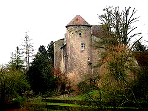
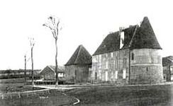
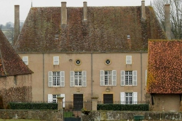
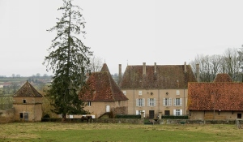

Recensement Jean-Claude Truffet
| Département | 71 — Saône-et-Loire |
| Canton | Charolles |
| Commune | Marcilly-la-Gueurce |
| Type d'édifice | Maison forte |
| Période d'origine | XV |




MARCILLY, maison forte tenue dès le XIIe siècle par une famille qui en portait le nom, la Motte-de-Marcilly passa par mariages, au XVIe siècle, à Florent de Martel, gentilhomme dauphinois, puis à Jean-Gaspard de Bionnay. Le château, qui avait pris le nom de "Vieux château", fut acquis des Bionnay par Etienne Dagonneau vers 1650. En 1764, l'immense fortune de la famille Dagonneau ayant été lapidée, il fut vendu à Jean d'Aoustène, payeur de la cour des monnaies de Lyon, sa fille épousa Claude Voiret, qui appartenait à une vieille famille lyonnaise. Des Voiret de Marcilly il parvint plus tard, par les femmes, à la famille Sarton du Jonchay.
TERZE, la maison forte de Terzé apparaît pour la première fois en 1340 comme propriété de la famille Colomb, qui la conservera jusqu'au milieu du XVe siècle. Ventes et successions la mettent ensuite entre les mains d'Emilienne de Montmorillon, épouse d'Adrien de la Garde, aux Morelon, à la famille de Martel et finalement, de la fin du XVIIe siècle , des Dagonneau de Marcilly. Terzé est vendu à Jean d'Aoustène, puis à Jean-Baptiste Sampier d'Arena, négociant à Lyon, avant d'échoir à Claude Voiret de Chanay, ancien avocat général du parlement de Dombes, mort en 1823 le domaine appartient à la famille Sablon du Corail. Dans la commune le château Moulin la Cour du XIXe siècle.
Marcilly la Gueurce, plusieurs fois modifié depuis le XIIe siècle, le château comprend un gros pavillon rectangulaire, flanqué d'une tour circulaire découronnée à base légèrement taluté. Contre lui s'adosse, à l'alignement de sa façade orientale, un corps de logis édifié au XVIe siècle à l'emplacement d'une cour pavée. Précédé à l'est d'un balcon de pierre reposant sur des arcades, il est flanqué d'une tour circulaire qui a retrouvé son toit conique et d'une tour carrée tronquée. Le donjon a été détruit en 1825, résultant de la transformation d'une ancienne tour circulaire, qui contient un escalier à vis.
Terzé, la maison forte de Terzé au dessus de l'Ozolette a Marcilly la Geurse aujourd'hui réduit a un simple bâtiment de plan rectangulaire à un étage et un demi-étage dépourvu de toute ornementation et couvert d'une haute toiture à croupes, flanqué d'une tour circulaire coiffée d'un toit conique, et un petit pavillon est relié à des communs, de construction récente prés d'un jardin entouré de murs avec des pigeonniers carrée aux angles. Au
sud se trouve un fossé en eau, partiellement transformé en lavoir.
Famille d'Etienne Dagonneau Famille Colomb
"
Château de Marcilly la Gueurce et de Terzé